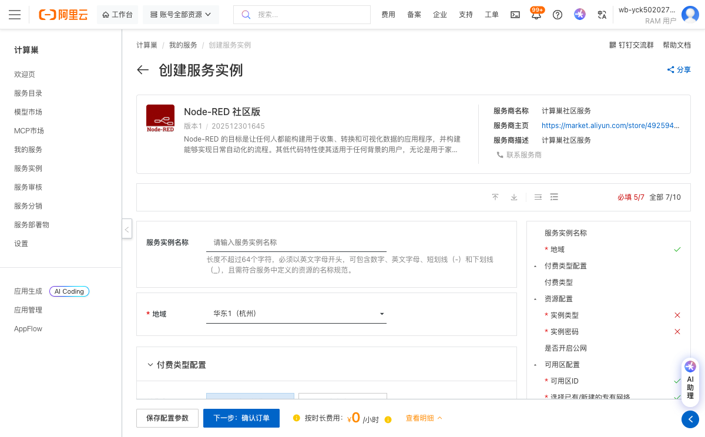
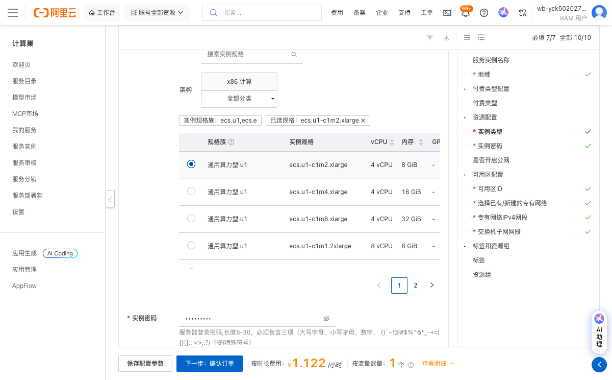
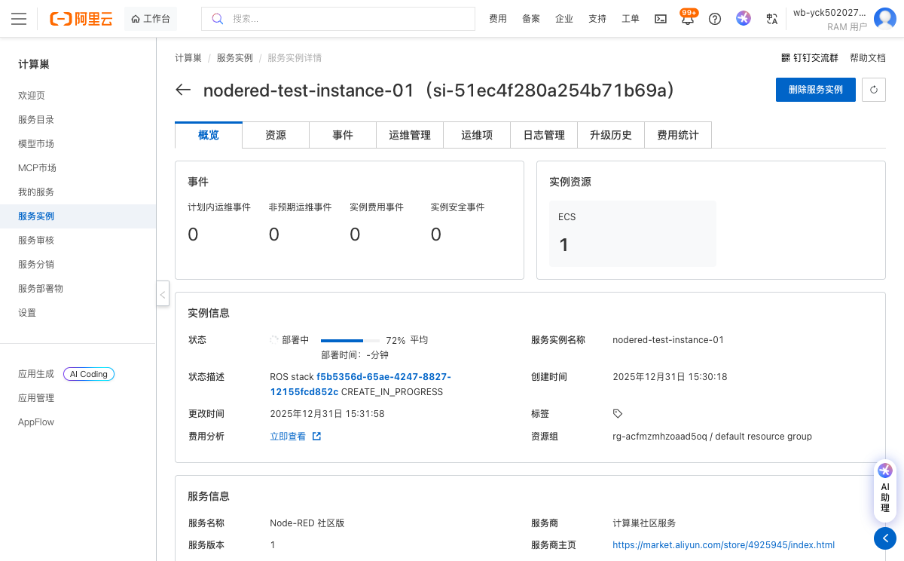
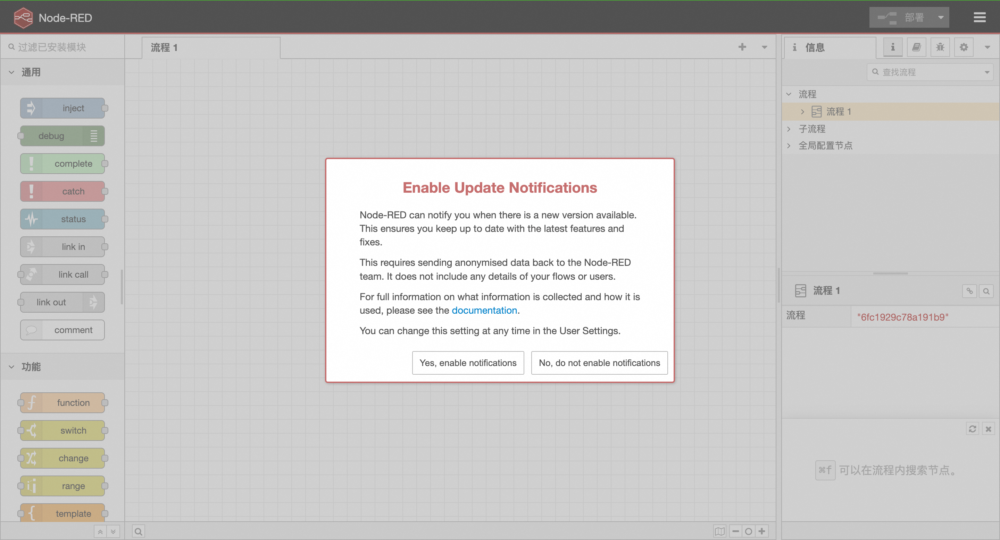

Node-RED 社区版服务实例使用文档
概述
Node-RED 的目标是让任何人都能构建用于收集、转换和可视化数据的应用程序，并构建能够实现日常自动化的流程。其低代码特性使其适用于任何背景的用户，无论是用于家庭自动化、工业控制系统还是介于两者之间的任何领域。
部署操作流程
-
点击链接：部署链接，进入服务实例部署界面，根据界面提示，填写参数。

-
查看价格信息，在页面右侧可以查看按时长费用预估。
-
确认所有配置参数无误后，点击"下一步：确认订单"按钮。

-
在确认订单页面，再次检查配置信息，然后点击"创建实例"按钮开始部署。
-
等待服务实例创建完成，部署过程可能需要几分钟时间。

-
部署完成后，可以在实例详情页面获取公网访问地址，点击公网访问地址即可使用Node-RED服务。

© 2009-2022 Aliyun.com 版权所有